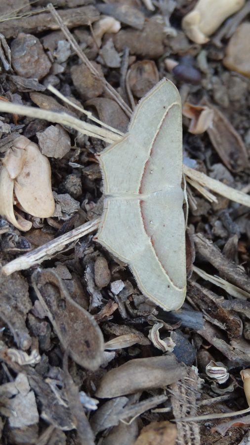

क्रॉस-लाइन भूमितिक पतंगाCross-line Geometer Moth
Traminda mundissima · Geometridae · INS-0229

- Scientific name वैज्ञानिक नाम
- Traminda mundissima (Walker, 1861)
- Family कुल
- Geometridae
- Hindi हिंदी
- क्रॉस-लाइन भूमितिक पतंगा
- Local names स्थानीय नाम
- cross-line geometer moth, traminda mundissima, cross line geometer, kros-lain bhumitik patanga
- Status here यहाँ की स्थिति
- native
- Movement आवागमन
- Resident, here all year
- Known from कहाँ दर्ज
- Others have published records from the wider Awadh–Purvanchal plain, none yet from Basti–Ayodhya अवध–पूर्वांचल से दूसरों के प्रकाशित अभिलेख, बस्ती–अयोध्या से अभी नहीं
- IUCN IUCN
- not evaluated
- Review समीक्षा
- not yet reviewed
When to look कब देखें
Present all year. साल भर मौजूद।
Tell it apart from इनसे अलग पहचानें
क्रॉस-लाइन भूमितिक पतंगा / Cross-line Geometer Moth
Traminda mundissima (Walker, 1861) — Geometridae
क्रॉस-लाइन भूमितिक पतंगा — बबूल और सुबबूल के पेड़ों के पास मिलने वाला एक नाजुक और सुंदर पतंगा। इसके पंखों का रंग हल्का कत्थई या मटमैला हरा होता है और दोनों पंखों के आर-पार एक सीधी गहरी लकीर खिंची होती है, जो पतंगे के बैठने पर एक निरंतर रेखा जैसी दिखती है। इसकी सुंडी एक लूपर (इल्ली) होती है जो चलते समय अपने शरीर का घेरा बनाती है।
Quick Identification त्वरित पहचान
| Feature | Description |
|---|---|
| Habit | Delicate, medium-sized geometer moth resting with wings outspread |
| Forewing | Pale reddish-ochreous to greyish-green with an acute apex |
| Cross-line | Prominent dark reddish or olive straight line running obliquely across both wings |
| Discal spot | Small dark discal ring or speck present on both wings |
| Caterpillar | Slender looping caterpillar mimicking a dry twig or leaf petiole |
Field tip: Look on the leaves of babool or subabul trees at dusk, or check whitewashed walls near thorn scrub at night.
हिंदी — कैसे पहचानें: हल्के कत्थई या हरे पंख, पंखों के आर-पार खिंची एक गहरी सीधी लकीर, और बैठने पर तिकोना सपाट आकार।
Morphology आकारिकी
Adult description: Head and body pale fawn-coloured or ochraceous-grey. Forewing with a pointed apex, variable in background coloration from pale straw, fawn, or reddish-brown to dull greenish-grey, lightly dusted with fuscous scales. The most distinctive feature is a sharp, straight, oblique postmedial line of dark reddish-brown or olive, which extends uninterrupted from near the forewing apex across the disc onto the inner margin of the hindwing. A small dark discal spot is present in the cell.
Hindwing: Concolorous with forewing, slightly angled at vein four, traversed by the continuation of the straight dark line.
Larval morphology: Typical geometrid inchworm (looper); elongate, twig-like, bearing only two pairs of functional abdominal prolegs, moving by drawing the rear legs forward to form a vertical loop.
हिंदी: पंखों पर आगे के सिरे से पीछे तक एक सीधी गहरी लकीर दौड़ती है। इसकी इल्ली चलते समय लूप बनाती है और सूखे तिनके जैसी दिखती है।
Behaviour & Ecology व्यवहार और पारिस्थितिकी
Traminda mundissima is nocturnal. Adults rest flat against foliage or tree trunks during the day, positioning their wings so that the dark oblique cross-line aligns perfectly across both wings, visually disrupting the body outline.
Flight occurs after sunset. Adults fly with gentle, fluttery wingbeats and are readily attracted to light sources in rural landscapes.
Larvae are specialized folivores of mimosoid legumes. They display remarkable crypsis, holding themselves rigid at an angle from a twig when at rest, resembling a broken leaf petiole or small side branch.
हिंदी: यह पतंगा दिन में पत्तों से चिपककर बैठता है जिससे इसकी सीधी लकीर पत्ते की नस जैसी लगती है। रात में यह रोशनी की ओर उड़ता है। इसकी इल्ली तिनके जैसी बनकर छिपती है।
Life Cycle / Phenology जीवन चक्र
| Season / Month | Stage & Activity |
|---|---|
| March–May (Summer) | Adults emerge from overwintered pupae and fly in dry thorn woodland |
| June–August (Monsoon) | Caterpillars feed actively on new acacia foliage and tender shoot flushes |
| September–November (Post-monsoon) | Maximum adult numbers observed around lights and flowering trees |
| December–February (Winter) | Overwintering primarily as pupae sheltered in silken cocoons in leaf litter |
The species is multivoltine in the plains, producing multiple generations throughout the year with peak activity following the rainy season.
हिंदी: गर्मी के बाद बरसात में बबूल पर नए पत्ते आते ही इसकी इल्लियां तेजी से बढ़ती हैं। अक्टूबर-नवंबर में वयस्क पतंगे सबसे ज्यादा देखे जाते हैं।
Host Plants or Prey आहार
- Leguminous Host Plants: Foliage of Acacia nilotica (babool), Albizia procera (safed siris), Albizia lebbeck, and Subabul (Leucaena leucocephala).
- Secondary Trees: Occasionally recorded on Pithecellobium dulce (jungle jalebi) and related mimosoids.
- Adult Diet: Forages on nectar of small night-flowering trees and floral secretions.
हिंदी: इसकी इल्ली बबूल, सफेद सिरस, सुबबूल और जंगल जलेबी की कोमल पत्तियों को खाती है। वयस्क पतंगा फूलों का रस चूसता है।
Predators / Natural Enemies शत्रु
- Spiders: Foliage-gleaning crab spiders and lynx spiders ambush adults resting on leaves.
- Invertebrates: Mantids and predatory stink bugs prey on looping caterpillars.
- Vertebrates: Small insectivorous birds search thorn branches for twig-mimicking loopers during daylight.
हिंदी: कांटेदार झाड़ियों में रहने वाली मकड़ियां और गिरगिट इसका शिकार करते हैं। बबूल पर फुदकने वाली छोटी चिड़ियां इसकी इल्लियों को खोजकर खाती हैं।
Agricultural / Human Relevance कृषि प्रासंगिकता
- Agroforestry associate: Feeds on fodder trees like subabul and babool but rarely reaches pest population densities in the region.
- Non-damaging species: Does not harm agricultural field crops or major horticulture orchards.
- Camouflage exemplar: Widely cited in natural history teaching as an example of disruptive line camouflage in moths.
हिंदी: यह बबूल और सुबबूल के पत्तों पर रहता है पर फसलों को नुकसान नहीं पहुंचाता। इसका पंख रंग-रूप प्रकृति में छलावरण का सुंदर उदाहरण है।
Expected Locally स्थानीय रूप से अपेक्षित
Not a field record. Written from published accounts for eastern Uttar Pradesh. No confirmed local sighting yet — if you have seen it, that is what the atlas needs.
अभी तक स्थानीय पुष्टि नहीं। यह विवरण प्रकाशित स्रोतों से है, किसी अवलोकन से नहीं।
Expected across dry deciduous scrub, canal-bank acacia belts, and rural grazing lands in Basti, Ayodhya, and Sant Kabir Nagar where babool and subabul trees grow. GBIF holds published records from the wider Awadh–Purvanchal plain, none yet from Basti–Ayodhya. A first local record would be a photograph of an adult moth showing the unbroken cross-line, submitted with date and locality through the About page.
Distribution वितरण
Global range: Widespread across South Asia, Africa, southern Arabia, India, and Sri Lanka.
In India: Distributed across peninsular India, the Gangetic plain, Central India, and dry scrub zones (Hampson 1895).
In Uttar Pradesh: Broadly distributed in thorn forests, ravines, and rural plantations.
In Basti district / eastern UP: Expected along canal corridors and community grazing lands.
हिंदी: यह पतंगा भारत, अफ्रीका और दक्षिण एशिया के शुष्क और अर्ध-शुष्क मैदानी भागों में पाया जाता है।
Research Questions शोध प्रश्न
- What is the preference of Traminda mundissima between native babool and introduced subabul? / देशी बबूल और सुबबूल में से यह पतंगा किसे अधिक पसंद करता है?
- How accurately does the dark cross-line disrupt bird predator detection against bark? / पंखों की सीधी लकीर चिड़ियों की नजर से बचने में कितनी मददगार होती है?
- What is the seasonal flight duration of adults in canal-side plantations in Basti? / बस्ती की नहरों के किनारे यह पतंगा साल के किन महीनों में सबसे ज्यादा उड़ता है?
- How do parasitoid chalcid wasps regulate looper populations on village Acacia? / बबूल पर रहने वाली इसकी इल्लियों पर परजीवी ततैयों का क्या प्रभाव पड़ता है?
- Can village children locate the looper caterpillar while it is standing rigid like a twig? / क्या ग्रामीण बच्चे डाल पर तिनके की तरह सीधी खड़ी इल्ली को पहचान सकते हैं?
Similar Species मिलती-जुलती प्रजातियाँ
| Species | How to tell apart | हिंदी |
|---|---|---|
| Traminda falcata | Forewing apex strongly falcate (hooked); cross-line less straight | पंख का सिरा दरांती जैसा मुड़ा हुआ, लकीर कम सीधी |
| Small Emerald Moth (Comostola laesaria) | Bright pale emerald green; lacks a single straight dark cross-line | चमकीला हल्का हरा रंग, सीधी काली लकीर का अभाव |
| Handmaiden Moth (Amata cyssea) | Day-flying black moth with transparent spots; totally different form | दिन में उड़ने वाला काला पतंगा, पारदर्शी धब्बे |
Field rule: A delicate fawn-grey or greenish geometer moth with a single uninterrupted dark straight line running from the forewing apex across both wings identifies Traminda mundissima.
Taxonomy & Classification वर्गीकरण
Original description. Described by Francis Walker in 1861 as Acidalia mundissima in List of the Specimens of Lepidopterous Insects in the Collection of the British Museum, part 23, pp. 757–1020.
Subspecies. Monotypic across South Asia; recognized without distinct subspecies partitions in India.
Family and order placement. Placed in the family Geometridae, subfamily Sterrhinae (or Timandrinae), in the order Lepidoptera.
IUCN status rationale. Not evaluated on the IUCN Red List; widely distributed across two continents with extensive and stable populations.
हिंदी: फ्रांसिस वॉकर ने 1861 में इसका पहला वैज्ञानिक विवरण दिया था। यह जियोमेट्रिडी कुल का सदस्य है।
Photo Gallery फोटो गैलरी
No photos yet — add field photos to media/species/cross_line_geometer_moth/ and run node scripts/sync_photos.js.
Photos needed आवश्यक फोटो
- [ ] Adult resting flat on leaf showing aligned cross-line (पत्ते पर बैठा वयस्क पतंगा)
- [ ] Specimen attracted to light trap (रोशनी पर आया हुआ पतंगा)
- [ ] Twig-mimicking looper caterpillar on babool branch (बबूल की डाली पर तिनके जैसी इल्ली)
References संदर्भ
- Walker, F. (1861). List of the Specimens of Lepidopterous Insects in the Collection of the British Museum, part 23, pp. 757–1020. British Museum, London.
- Hampson, G.F. (1895). The Fauna of British India, including Ceylon and Burma: Moths, vol. 3, p. 420. Taylor and Francis, London.
- Prout, L.B. (1934). Geometridae: Subfamilia Hemitheinae. In: Lepidopterorum Catalogus, pars 63, pp. 1–432. W. Junk, Berlin.
- Holloway, J.D. (1996). The Moths of Borneo: part 9, Geometridae. Malayan Nature Society, Kuala Lumpur.
- Robinson, G.S., Ackery, P.R., Kitching, I.J., Beccaloni, G.W. & Hernández, L.M. (2001). Hostplants of the Moth and Butterfly Caterpillars of the Oriental Region. Natural History Museum, London.
- GBIF Occurrence Data — Traminda mundissima (Walker, 1861), India (2025).
Source file: species/fauna/insects/cross_line_geometer_moth.md